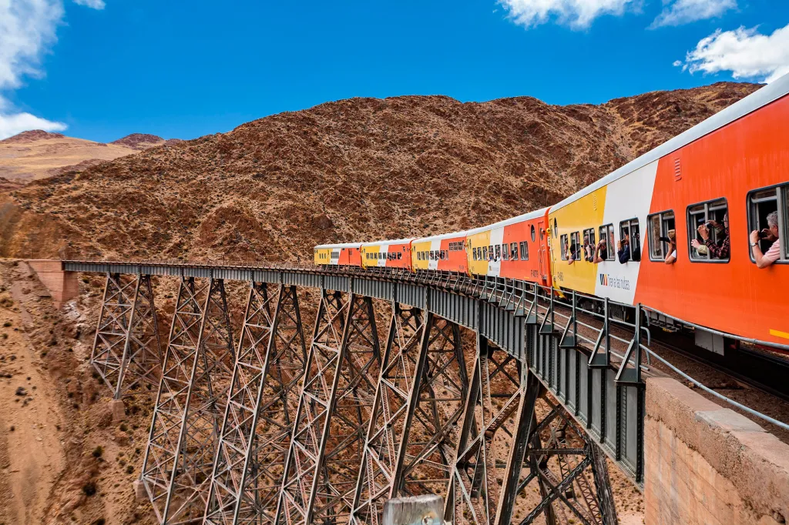
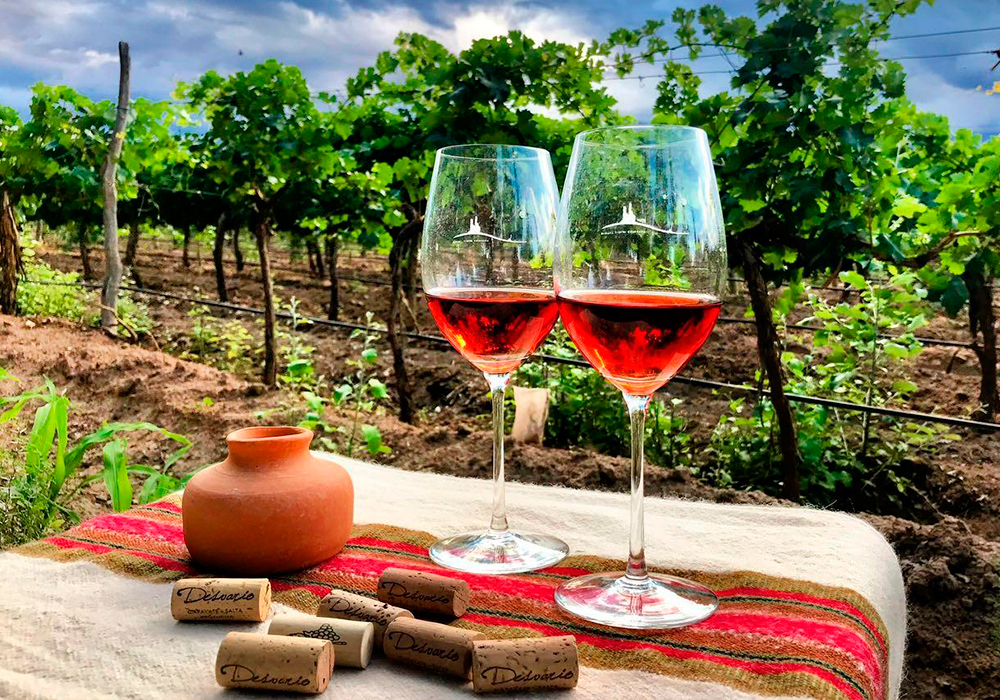
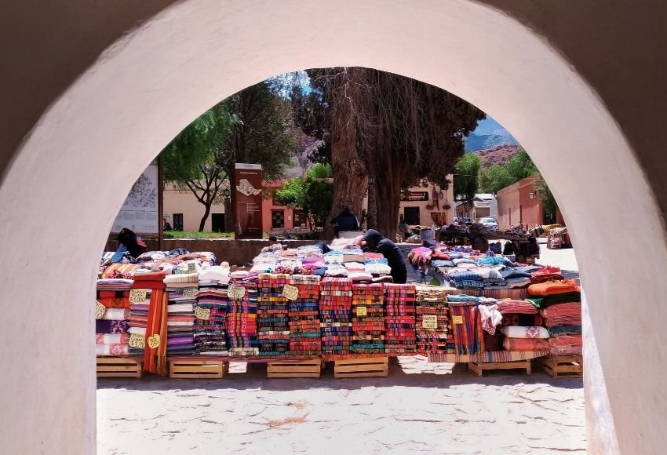
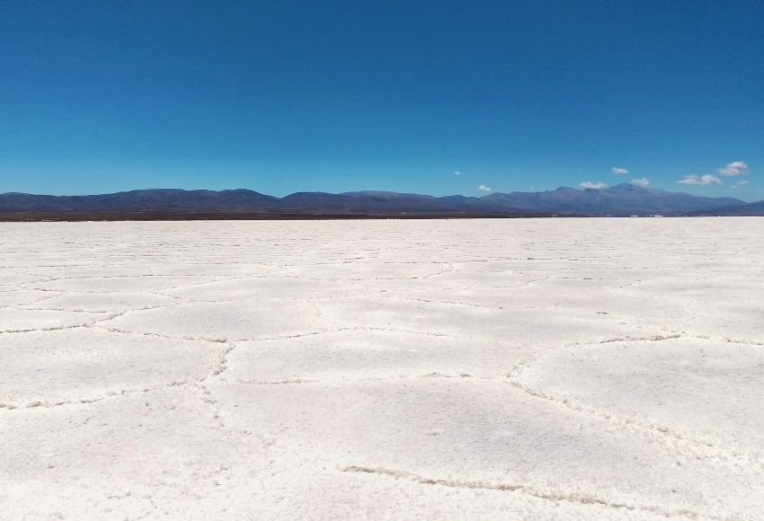

Salta capital
La ciudad de Salta es muy linda y todo se encuentra bastante cerca, lo que la hace ideal para recorrer a pie.
Conocer mas

Tren de las Nubes
El trayecto que recorre el tren es entre San Antonio de los Cobres y el Viaducto de la Polvorilla, donde está el famoso puente en altura (4.200 msnm).
Conocer mas

Cafayate
Ningún recorrido por Salta estaría completo sin conocer Cafayate, la cuna del buen vino salteño.
Conocer mas

Purmamarca
Aquí, las raíces y costumbres de los pueblos originarios aún se conservan, aunque bien adaptadas a la vida moderna y el turismo local.
Conocer mas

Salinas grandes
Otro lugar imperdible que conocer, las famosas Salinas Grandes se encuentran a sólo 65 km de Purmamarca.
Conocer mas